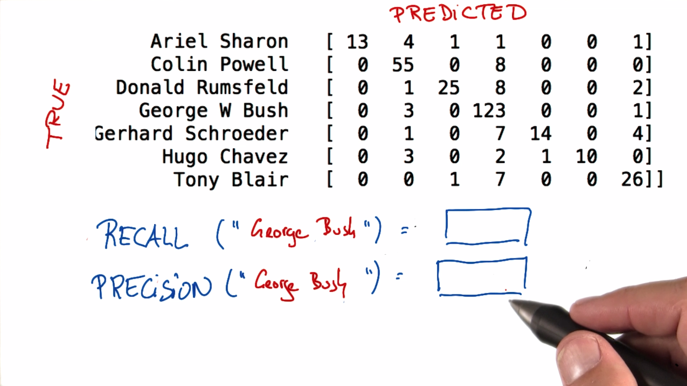

逻辑回归
Back to Home
01. 视频：简介
02. 视频：拟合逻辑回归
03. 练习：逻辑回归小测
04. 视频：在 Python 中拟合逻辑回归
05. Notebook + 练习：在 Python 中拟合逻辑回归
06. 视频：解释结果——第一部分
07. 录屏视频：解释结果——第二部分
08. Notebook + 练习：解释结果
09. 视频：模型诊断+性能指标
10. 混淆矩阵
11. 混淆矩阵练习 1
12. 混淆矩阵练习 2
13. 填充混淆矩阵
14. 混淆矩阵：误报
15. 特征脸混淆矩阵
16. 有多少 Schroeder
17. 有多少 Schroeder 预测值
18. 正确分类查韦斯 1
19. 正确分类查韦斯 2
20. 精确率和召回率
21. 鲍威尔精确率和召回率
22. 布什精确率和召回率
23. 特征脸方法中的 True Positives
24. 特征脸方法中的 False Positives
25. 特征脸方法中的 False Negatives
26. 对拉姆斯菲尔德练习 TP、FP、FN
27. 精确率公式
28. 召回率公式
29. 录屏视频：在 Python 里进行模型诊断——第一部分
30. Notebook + 练习：模型诊断
31. 视频：在开始机器学习之前的结语
32. 文本：复习
33. 视频：恭喜
Back to Home
22. 布什精确率和召回率
布什精确率和召回率
Question:
Start Quiz:

Solution:
Next Concept